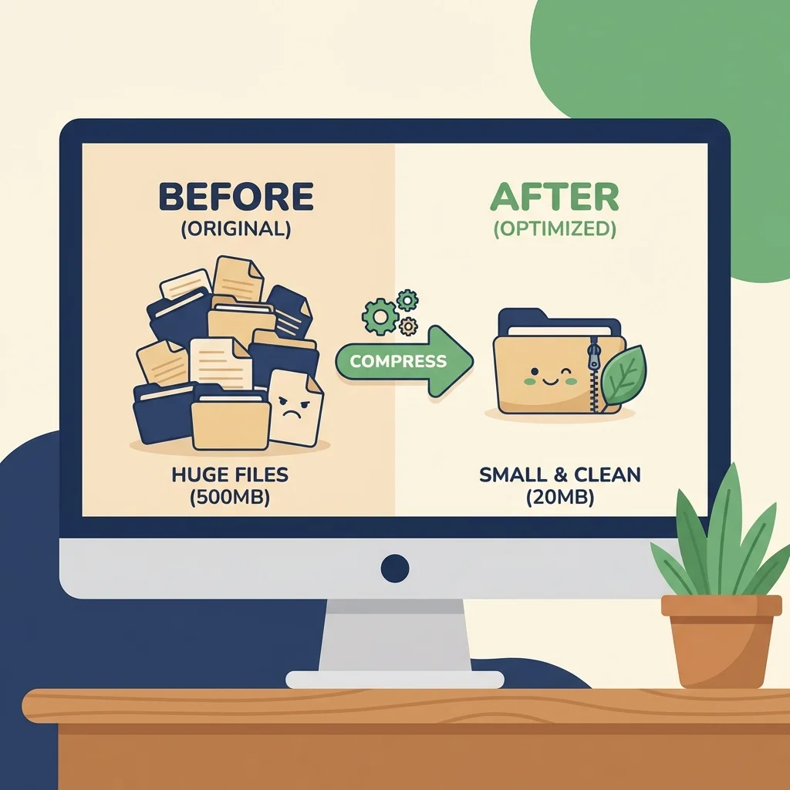

コンテンツ・エコシステム運用ガイド (Blog & SNS)
Created: 2026-02-05
ブログ記事とInstagramを連携させ、効率的に「資産」を積み上げるための運用ルールブックです。
1. ビジュアル・ハイラルキー (画像のルール)
ブランドの統一感を守るため、使用する画像には厳格な優先順位があります。
Level 1: Authentic Real Photos (最高信頼度)
実際の現場、本人の写真、具体的な作業風景。最も信頼性が高い。
推奨: トップページ、重要事例
Level 2: Unified Illustrations (標準運用)
ネイビー・ゴールド・ベージュを基調としたフラットイラスト。ブログのアイキャッチやSNSの表紙に使用。
推奨: ブログ一覧、SNSフィード
🎨 Level 2: Unified Design Code (統一感のルール)
- 重要スタイル: 線画なし・縁取りなし (No Outlines / No Strokes)
- 共通テイスト: フラットデザイン、マットな質感、ベクター調
- カラーパレット: ● Navy (#0F172A) をベースに、 ● Gold や ● Gray で構成
- NG事項: 縁取り(Outlines)、主線のあるイラスト、写真との合成
📸 Good Examples (基準サンプル)
 Ad Budget
Ad Budget
 Team Tech
Team Tech
Ad Budget
Team Tech

Optimization
Level 3: Optimized AI / Screenshots (補完)
やむを得ず使用する場合は、Level 2のイラストとトーンを合わせるか、記事の「中身（証拠画像）」としてのみ使用する。
禁止: ブログ一覧やSNS表紙での単体使用
技術ルール: すべての画像は本番公開時に .webp 形式に変換すること。
2. Instagram連携ワークフロー
ブログ記事を「親」として、Instagramフィードを「子」として展開するエコシステムです。
Step 1: ブログ記事の執筆 (Parent Content)
- まずブログ記事を完成させます（論理と証拠を固める）。
- アイキャッチ画像（Level 2 イラスト）を作成・選定します。
Step 2: インスタ用クリエイティブ作成 (Canva)
えりさんがCanvaのテンプレート（4:5サイズ）を使用して作成します。
- 表紙: ブログのアイキャッチ画像をベースにする（統一感）。
- 中面: ブログの要点を3〜4枚のスライドに要約。
- ツール: Canvaテンプレートを使用（毎回ゼロから作らない）。
Step 3: キャプション作成 (Assistant)
私がブログ記事を元に、インスタ用の「短く、共感を呼ぶ」文章を作成します。
- ブログへの誘導（「続きはプロフのリンクから」）を必ず入れる。
3. CTA・フッター標準化ルール (CTA Standards)
全てのブログ記事は、読者を迷わせないために以下のCTA（行動喚起）構造を遵守してください。
1. 記事内CTA (In-Article CTA)
記事の最後（まとめの直前、または直後）に配置する。
- クラス名:
.blog-cta-box - 内容: 記事の内容を受けた具体的な提案（例:「LP診断しませんか？」）
- リンク先: 公式LINE (
https://lin.ee/nMDNiFg)
2. 共通フッターCTA (Footer CTA)
<footer> タグの直前に必ず配置する。
- セクション:
<section class="footer-cta-section"> - 役割: 記事を読み終えたユーザーへの最終的な受け皿（30秒で登録、などのハードル下げ）
4. 運用・管理ルール
画像ファイル管理
blog/images/ フォルダに集約し、以下の命名規則を守ります。
blog_illust_[theme].webp(イラスト)psi_[project]_[before/after].webp(証拠画像)